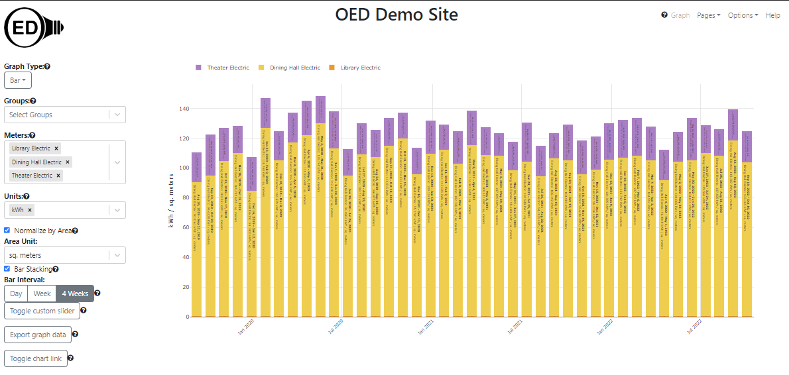

<div class="row">
	{% include_relative _version %}
	{% include help-sidebar OEDVersion=OEDVersion %}
	<div class="medium-8 medium-pull-4 columns" markdown="1">
	
	<h2 id="overview">Overview</h2>
	<p>The energy used by a building generally relates to its size. For example, suppose building A is 10 times larger
		and
		uses 3 times more energy than building B. In absolute usage, building A would have values that are 3 times
		larger
		than building B. However, if you normalize the usage by area then building A uses 3 / 10 = 0.3 or 30% of the
		energy
		of building B per unit of area. The un-normalized data in OED would show the first result and the normalized by
		area would show
		the
		second result. Both have their own value so OED supports both views.</p>

	<h2 id="usage">Usage</h2>
	<p>One can choose to normalize by area or not by checking the box shown labeled "Normalize by Area" in the figure
		below (highlighted in blue
		box). This can be done for any graphic. It cannot be done for <a href="../graphingUnits/#axisUnit">raw
			units</a> because it is unclear what area normalization would mean. For example, temperature per sq. foot is
		not something one talks about.</p>
	
	<p>Once "Normalize by Area" is selected (checked) then a dropdown menu will appear that allows one to select the
		unit for area
		normalization. The choices are "sq. feet" and "sq. meters". The default value will be the one selected by the
		site. This is shown in the following figure:</p>
	
	<p>Once area normalization is selected, only meters and groups that have an assigned area will be selectable. In the
		following figure, the "Campus Recycling" meter is grayed out under "----- Incompatible Meters -----" because it
		is not assigned an area. The "Library temperature" and "Theater temperature" meters are also listed here since
		temperature is a raw unit.</p>
	
	<p>If a meter or group was already selected but it is not assigned an area then it will be placed in the "-----
		Incompatible Meters -----" area and grayed out. However, if area normalization is unchecked, it will again
		appear on the graphic and as a selected meter. Note that other meters/groups can appear grayed out because they
		are incompatible for other reasons such as an incompatible unit.</p>
	<p>As an example, the following figure shows the un-normalized by area graphic for the electric usage for three
		meters:</p>
	
	<p>As shown, the energy usage (from least to most) is "Library", "Dining Hall" and "Theater". In the <a
			href="../exampleDescription/">example description</a>, the area for the library is 100,000, the dining
		hall is 1,000 and the theater is 10,000 where all areas are in the unit of sq. meters. Thus, when area
		normalization is chosen in the following figure, the relative usage changes from least to most to be "Library",
		"Theater" and "Dining Hall".</p>
	
	<p>The fact that the library used the least electricity but is the largest building shows it is uses very little
		electricity
		both absolutely and for its size. It is so low compared to the others that when normalized by area it is
		virtually on the x-axis. The usage of the dining hall and theater change position because even though
		the theater uses more electricity it is 10 times larger in area. That is why the theater went from having values
		of around twice to dining hall to one-fifth the dining hall when normalized by area (2 / 10 = 1 / 5). Also
		note that the y-axis label went from "kW" to "kW / sq. meters" to reflect that the readings are
		normalized by area.</p>
	<p>As one example of another graphic normalizing by area, the following figure shows the above figure as a stacking
		bar graphic with 4 week bars. Again, the library values are very small at the bottom of each bar.</p>
	<p></p>

	<h2 id="details">Details</h2>
	<p>Note that changing the "Area Unit" changes the y-axis label to reflect the chosen unit but does not change the
		look of the graphics. One is normalizing by a different value but the change is the same for all meters/groups.
		Exporting graph data will reflect the selected unit.</p>
	<p>For data un-normalized for area, the sum of the underlying meters equals the meter value. However, this may not
		be the case when normalizing by area. For example, in the following figure, the sum of the electric usage of the
		first and second floor of the "Great Dorm" is equal to the group that contains these two meters ("Great Dorm
		Electric").</p>
	
	
	<p>When you normalize by area, the sum of the two meters is no longer equal to the group as seen in the following
		figure:</p>
	
	
	<p>This fact is clear from seeing that the group lies between the two meters rather than above them. The area of
		each meter is 5,000 sq. meters and the area of the group is 10,000 sq. meters since it is the area of the two
		underlying meters. The reason the group is no longer the sum of the meters in this case is because the sum of
		two factions with the same denominator does not equal the sum of the numerators divided by the sum of the
		denominators. For example, say both floors of the Great Dorm had a reading of 500 then the group that has both
		of these would be 500 + 500 = 10,000. If you normalize by the area, each meter has a value of 500 / 5,000 = 0.1
		so the sum is 0.2. The group has a value of (500 + 500) / 10,000 = 0.1. This is smaller than the sum of the
		group values and that is why the group is no longer above the meters when normalized by area. However, it makes
		sense because the usage per sq. meter is the same for the two floors and the
		group has that same usage of 0.1.</p>
</div>
